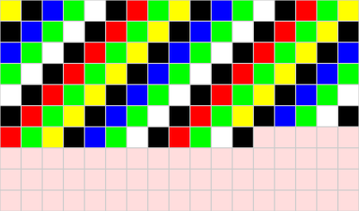

Mit Hilfe von digitalen Bildformaten können Bilder als Folge von 0-en und 1-en gespeichert und anschliessend wieder als Bild dargestellt werden. Dabei gibt das Bildformat vor, was eine 0 bzw. eine 1 an jeder Stelle zu bedeuten hat. Die am weitesten verbreiteten Bildformate sind Raster- und Vektorgrafiken.
Ein reines Rastergrafikformat enthält einen sehr kurzen Anfangsteil, der Informationen über die Dimensionen des Bildes und die Farbtiefe enthält. Der Rest der Datei enthält einfach nur Bits, mit denen für jedes einzelne Pixel von oben links bis unten rechts die Farbe angegeben wird. Wieviele Bits zu einem Pixel gehören, wird durch die im Anfangsteil festgelegte Farbtiefe bestimmt.
Wir betrachten ein einfaches Rasterformat, bei welchem zuerst durch eine 1-Byte-Zahl festgelegt wird, wieviele Pixel das Bild breit ist, danach wird ebenfalls durch eine 1-Byte-Zahl die Anzahl der Pixel in der Höhe festgelegt. Das nächste Byte legt die Farbtiefe fest, diese 1-Byte-Zahl gibt die Anzahl der unterschiedlichen Farben eines Pixels an. Alle Bits, welche danach kommen, geben die Farben einzelner Pixel von oben links nach unten rechts an, wobei immer soviele Bits zu einem Pixel gehören, wie durch die Farbtiefe festgelegt wurde. Der folgende Code ergibt nach diesem Format das gezeigte Bild:

0001000100001010000000111100000010101110001000101100
0000101011100010001011000000101011100010001011000000
1010111000100010110000001010111000100010110000001010
1110001000101100000010101110001000101100000010101110
0010001011000000101011100010001011000000101011100010
0010110000001010111000100010110000001010111000100010
1100000010101110001000101100000010101110001000101110
00
Das erste Byte gibt die Breite an, in diesem Fall 17 Pixel; das nächste Byte die Höhe, in diesem Fall 10 Pixel. Das dritte Byte - also das letzte Byte - legt fest, wieviele Bits pro Pixel verwendet werden. In diesem Fall 3, d.h. immer drei Bits zusammen enthalten die Information zu einem Pixel, wobei das erste Bit für rot, das zweite für grün und das dritte für blau steht.
0001 0001 0000 1010 0000 0011
Danach geben je drei Bits miteinander die Farbe der Pixel von links oben bis rechts unten an.
110 000 001 010 111 000 100 010 110 000 001 010 111 000 100 010 110
000 001 010 111 000 100 010 110 000 001 010 111 000 100 010 110 000
001 010 111 000 100 010 110 000 001 010 111 000 100 010 110 000 001
010 111 000 100 010 110 000 001 010 111 000 100 010 110 000 001 010
111 000 100 010 110 000 001 010 111 000 100 010 110 000 001 010 111
000 100 010 110 000 001 010 111 000 100 010 110 000 001 010 111 000
100 010 110 000 001 010 111 000 100 010 111 000
Wir können uns vorstellen, dass die Informationen eines Bildes so leicht übermittelt und danach wieder zu einem Bild zusammengesetzt werden können. Wenn ein Bild sehr viel mehr Pixel und für jedes dieser Pixel menr Information über die Farbtiefe enthält, so können Bilder in der Qualität entstehen, welche wir uns im Alltag gewohnt sind. Dabei können wir uns vorstellen, wieviele Ziffern für ein einziges Frame eines Videos übermittelt werden müssen - Videos auf YouTube haben zwischen 30 und 60 Frames pro Sekunde!
Mit diesem Interactive kann mit einem einfachen Rastergrafikformat experimentiert werden.